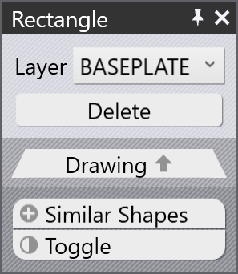

Importar garra do DXF
Uma garra de sucção a vácuo para as máquinas BendMaster pode ser importada de um arquivo DXF. O arquivo DXF representa a vista superior da garra (vista superior significa das ventosas, NÃO do BendMaster). As entidades POLYLINE no arquivo DXF fornecem a forma da placa da garra e as entidades TEXT fornecem informações adicionais sobre a garra (como seu nome, espessura e posicionamento das ventosas).
Arquivos no formato necessário (DXF, ARV ou GEO) podem ser importados para o Banco de Dados Bend.
Para importar uma garra:
-
Abra o Database dentro do TecZone Bend.
-
Selecione a opção Bend Grippers da lista.
-
Clique na opção Import… e selecione uma garra como arquivo DXF do diretório.

Aqui está como esta garra aparece após a importação (mostrada em duas vistas de baixo e de cima).


Garra básica
Veja o desenho simples mostrado abaixo, que define uma garra e pode ser salvo como um arquivo DXF para importar de volta dentro do Inventário de garras.

Aqui estão alguns pontos importantes sobre como o DXF é desenhado:
-
A origem do desenho (0,0) corresponde ao centro do pulso do robô. Você pode ver isso representado por um ponto e um círculo na figura. (Tanto o ponto quanto o círculo não são realmente necessários para a importação da garra, já que o centro da garra está implicitamente sempre na origem).
-
Este desenho também tem algumas entidades POINT representando cada uma das localizações das ventosas. Novamente, estas são principalmente para tornar o desenho mais claro e não são realmente usadas pelo importador de garras (as posições das ventosas são especificadas por entidades de texto).
-
A forma real da placa é desenhada como entidades POLYLINE fechadas. Se você tiver outras polilinhas dentro da externa, elas se tornam furos na placa.


Garra de duas camadas
Garras ligeiramente mais complexas podem ser modeladas usando uma camada BASEPLATE separada. Crie uma camada chamada BASEPLATE no arquivo DXF e desenhe algumas formas POLYLINE fechadas nessa camada. Então, esta camada pode ter limites de extrusão Z separados especificados pela chave BASEPLATEEXTENT. As ferramentas necessárias para criar e editar camadas agora foram adicionadas.
-
Clique em Related quando um desenho estiver sendo editado.
-
Selecione o menu Layers para adicionar novas camadas, renomeá-las, definir cores e alterar estilos de linha.

-
No desenho, clicar em uma entidade permite alterar a camada dessa entidade.

A camada aparece no painel de entidades somente se houver várias camadas no desenho. -
Após editar o desenho usando essas ferramentas, salve o desenho em formato DXF. Aqui está um DXF desenhado usando tal camada BASEPLATE (mostrada em verde na imagem).

Para esta garra, o pulso se estende de Z=0 a Z=23. Então, a placa base (verde) se estende de Z=23 a Z=40, conforme indicado pela chave BASEPLATEEXTENT. Finalmente, a placa de garra real (segurando as ventosas) se estende de Z=40 a Z=63, conforme indicado pela chave PLATEEXTENT. A placa da garra também tem alguns furos hexagonais nela. Quando importada, esta garra se parece com a imagem abaixo:

Garra multicamadas
Garras Multicamadas é uma versão atualizada de Garra de Duas Camadas na qual mais de duas camadas podem ser criadas e importadas usando TecZone Bend. Para usar uma garra multicamadas, o DXF terá que incluir o texto VERSION = 2. Uma amostra de garra multicamadas é mostrada abaixo:

Cada camada deve ser definida com suas extensões como LAYER_1 = 23 : 35. As entidades nesta camada serão adicionadas a essas extensões. Da mesma forma, as ventosas são definidas na forma, CupNo = X pos, Y pos, [Cup type, Mounting height, Cup group].
| As posições X e Y são obrigatórias. |
Diferentes definições possíveis para ventosas são explicadas abaixo:
CupNo = X pos, Y pos com o nome da ventosa especificado em CUPNAME como na versão anterior
CupNo = X pos, Y pos, Cup type, onde cada tipo de ventosa é definido separadamente (para ventosas
ovais, os nomes variam com o ângulo)
CupNo = X pos, Y pos, Cup type, Mounting Height
CupNo = X pos, Y pos, Cup type, Mounting Height, Cup Group
CUP1 = 275, 314, SAOB60x30_90grad_ged, 72, 2
Se a altura de montagem não for especificada, a extensão máxima da placa é considerada por padrão. Da mesma forma, o grupo de ventosas será definido como 1, se não for definido.
| No momento, TecZone Bend não suporta diferentes alturas de montagem para as ventosas. |
Quando importada, uma amostra de garra se parece com a imagem abaixo:


Garra de múltiplos circuitos
Você pode criar uma garra de múltiplos circuitos (uma garra que possui vários circuitos de vácuo independentes). Para tal garra, cada ventosa recebe um número de grupo diferente de zero.
Atribua grupos de sucção usando um formato especial para CUP1POS, CUP2POS, etc., conforme mostrado abaixo:
CUP1POS = 340,120 #6
CUP2POS = 420,140 #8
O valor após o # é o número do grupo de sucção para a ventosa. Neste exemplo, a ventosa 1 é atribuída ao grupo de sucção 6, a ventosa 2 é atribuída ao grupo de sucção 8, e assim por diante.
Para que uma garra de múltiplos circuitos seja configurada corretamente, todas as ventosas devem receber um número de grupo de sucção desta maneira.
| O número máximo de ventosas que podem ser usadas em uma garra é limitado a 100. Se você importar uma garra com mais de 100 ventosas, TecZone mostrará uma mensagem de erro de falha na importação. |
A imagem abaixo mostra algumas garras de amostra dentro do banco de dados Bend Grippers.